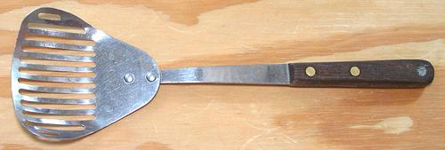

Slotted Spoons

Slotted spoons are an abomination, poorly designed for any use.
I don't have one in my kitchen. The Slotted Skimmer in the photo is
far superior, with more capacity, and a shape that can pick things
out from a deep pot and get in close to the sides. If you need more
delicacy, just tilt it and use one corner.
The photo example was made long ago by Robinson Knife, now
Robinson Home Products, and they no longer manufacture anything. The
only one I find available today is the 12 1/2" Stainless Steel Slotted
Skimmer from Chef Craft, which has almost exactly the same geometry.
Users are delighted with it - reviews running 4.7 star out of 5. Many
say they had been searching long and hard for one like this. Buy one now -
once you have used one of these, you'll never go back. 2022 US $6.46 on-line.
More on Kitchen Gear.
ke_slotspn1 180414 - www.clovegarden.com
©Andrew Grygus - agryg@clovegaden.com
Photos on this
page not otherwise credited are © cg1 -
Linking to and non-commercial use of this page permitted